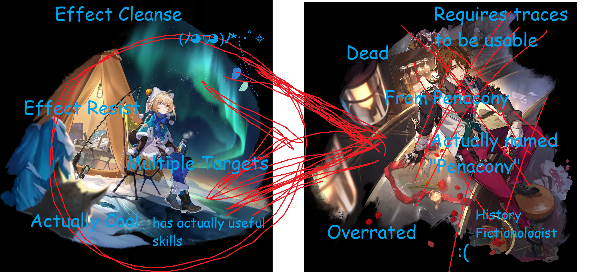

this version works without js
is this loading slowly/not loading? here's a version that should work faster! it also has even less CSS.
Why Lynx is objectively better than Gallagher (probably misinformation)

this is unreadable
MY EYES
[1] Lynx's Combat Mechanics | Honkai: Star Rail Wiki | Fandom
[2] Aggro | Honkai: Star Rail Wiki | Fandom